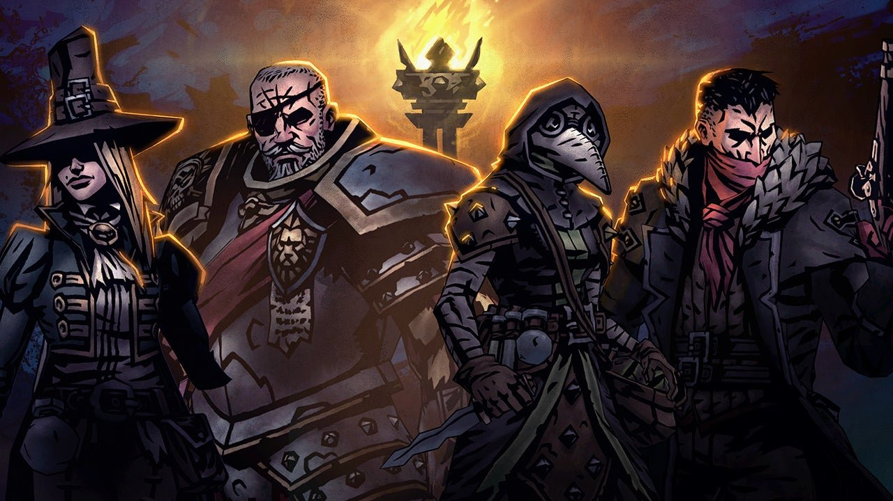

Para jogar o Rpg do ark, precisa de um personagem que você tenha criado com as características que você quiser. Para começar, os conceitos do personagem são que ele cresça e tenha sua vida ameaçada diante dos seus olhos, todos que foram para o ark podem ser de realidades diferentes e tempos diferentes. Suas qualidades são mantidas e características físicas e mentais. Seus aspectos de sobrevivência são mantidos mais balanceados pela competição na ilha.

Seus cristais da vida são colocados no braço direito, ou perna, ou peito. Eles que fazem sua capacidade de sobreviver a natureza do ark, com melhora em todos os sentidos e todos falarem a mesma língua.O personagem começa a perceber que está em um ambiente selvagem, cercado por dinossauros e criaturas desconhecidas. A primeira parte de sua história será marcada pela luta para se adaptar e entender que sua sobrevivência depende de dominar esse novo mundo. Suas habilidades na selva serão testadas.
A história do personagem é essencial: como ele viveu antes do Ark, como chegou lá, e como aceitou viver na ilha até tentar escapar. Suas habilidades e escolhas na "outra vida" serão cruciais para a sobrevivência. Afinal, "o que você fez, fará ainda mais, seja bom ou ruim."

No Ark, personagens podem ser criados pelo mestre ou pelos jogadores, com estatísticas baseadas em suas histórias e características. Suas ações evoluem ao longo do tempo, e jogar como um personagem exige interpretar suas decisões, evitando o "Meta Game". Aparência e conquistas refletem seus feitos, enquanto sobrevivem em uma selva cheia de predadores – que nem sempre são apenas animais.